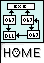

Enhanced
Dynamic Linking Library
for MinGW under MS-Windows
(Current
version @version@)
The following lists things which still need to be addressed before this
library can be considered version 1.0.
Make sure that it works very well with many different software
(to prove that the concept is good and that the functionality is really
available).
Change the memory allocation so it is system global and
accessible by any process. This is really only for public modules which
we may not really have too many of and thus it may not be necessary. At
this time, DLLs are publicly loaded so if you need a public module,
look into creating a DLL anyway...
Test with languages other than C and C++ and see if it works well
for those too.
Create a new script for ld to link this new kind of modules --
instead of using the -r option and the EDLL_ADDLIB() function (this
require the normalization of the .load section).
Change strip so these modules can have their debug stripped out,
but not their relocation symbols.
Make sure strip can just strip out the debug info out of an exe.
If you are a programmer and you think you can help with any of these
points, please, let me know!